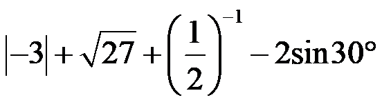
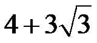
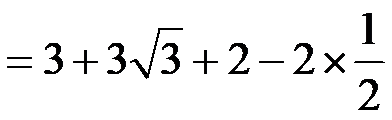
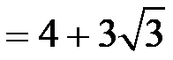

2025年北京市中考数学真题 · 数学解答题 第17题 · 对应解析
17. 计算：

．【答案】

【解析】
【分析】本题考查了含特殊角的三角函数值的混合运算，熟练掌握运算法则是解题的关键．
分别计算绝对值，化简二次根式，计算负整数指数幂，代入特殊角的三角函数值并进行乘法计算，再进行加减计算即可．
【详解】解：


．17. 计算：

．【答案】

【解析】
【分析】本题考查了含特殊角的三角函数值的混合运算，熟练掌握运算法则是解题的关键．
分别计算绝对值，化简二次根式，计算负整数指数幂，代入特殊角的三角函数值并进行乘法计算，再进行加减计算即可．
【详解】解：


．